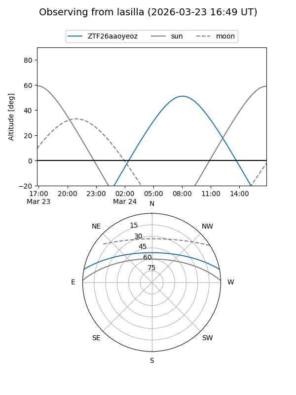
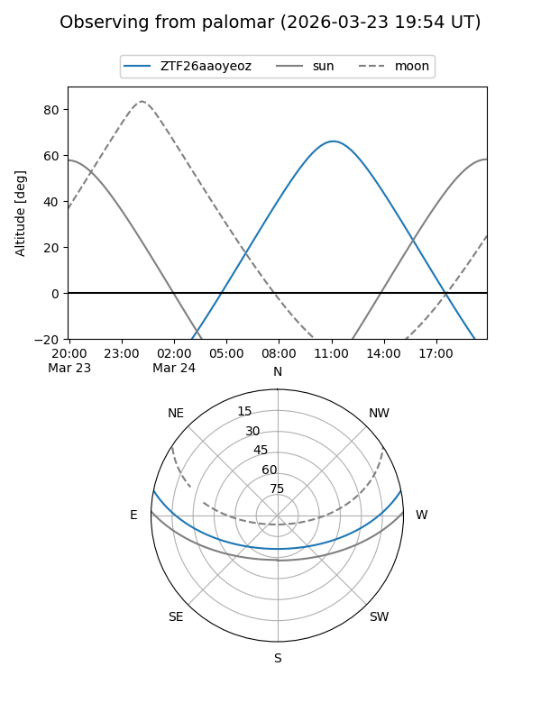

ZTF26aaoyeoz
Target ZTF26aaoyeoz at 2026-03-23 13:29
Aliases and brokers:
FINK: link
Lasair: link
ALeRCE: link
alt names
ZTF26aaoyeoz (ztf,fink_ztf)
Coordinates:
equatorial (ra, dec) = 231.4014,+9.61588
equatorial (HMS+DMS) = 15:25:36.34,+09:36:57.15
galactic (l, b) = (14.6486,+49.68459)
Flags:
Photometry:
last ztfg=18.68
1 ztfg detections
Lightcurve
Visibility


Additional plots